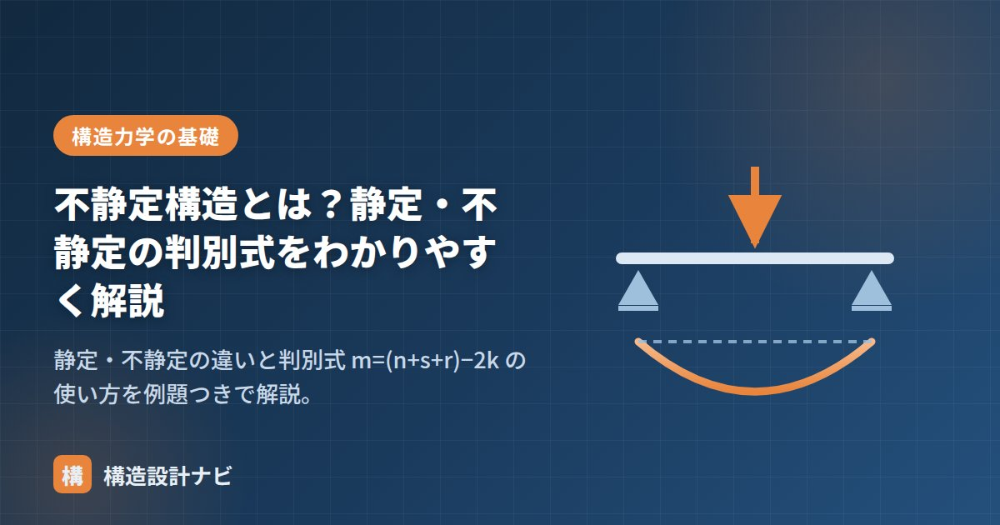

不静定構造とは？静定・不静定の判別式をわかりやすく解説

構造物は「つり合いの3式だけで解けるか」によって、静定構造と不静定構造に分かれます。実際の建物のほとんどは不静定構造です。この記事では、判別式の使い方と、なぜ実務では不静定が好まれるのかを解説します。
静定と不静定の違い
- 静定構造：未知数（反力・応力）の数が、つり合い式の数とちょうど同じ。つり合い式だけですべて解ける。例：単純梁、片持ち梁、3ヒンジラーメン。
- 不静定構造：未知数がつり合い式より多い。解くには変形の条件を追加で使う必要がある。例：両端固定梁、連続梁、一般的なラーメン。
- 不安定構造：未知数が足りず、形を保てない。構造物として成立しない。
判別式：m = ( n + s + r ) − 2k
骨組が静定か不静定かは、次の式で判別できます。
| 判定 | 意味 |
|---|---|
| m ＜ 0 | 不安定（構造物として成立しない） |
| m ＝ 0 | 静定（つり合い式だけで解ける） |
| m ＞ 0 | m次の不静定（mが大きいほど「余分な拘束」が多い） |
例題で確認
| 構造 | n（反力） | s／r／k | m | 判定 |
|---|---|---|---|---|
| 単純梁（ピン＋ローラー） | 2+1=3 | 1／0／2 | (3+1+0)−4＝0 | 静定 |
| 片持ち梁（固定端） | 3 | 1／0／2 | (3+1+0)−4＝0 | 静定 |
| 両端固定梁 | 3+3=6 | 1／0／2 | (6+1+0)−4＝3 | 3次不静定 |
| 2スパン連続梁（ピン+ローラー×2） | 2+1+1=4 | 2／1／3 | (4+2+1)−6＝1 | 1次不静定 |
- m は「壊れてもよい拘束の余裕」と読める。3次不静定なら、拘束が3つ失われてようやく静定になる。
- 判別式は機械的に使えるが、m≧0でも形が悪ければ不安定な場合がある（例：3つのヒンジが一直線に並ぶ）。式と図の両方で確認するのが鉄則。
なぜ実際の建物は不静定なのか
不静定構造は計算が面倒な代わりに、構造物として大きな利点があります。
- 力の再配分ができる：ある部分が降伏しても、余った拘束が荷重を肩代わりする。静定構造は1か所壊れた瞬間に崩壊機構になる。
- 変形が小さい：拘束が多いぶん剛性が高く、たわみ・層間変形を抑えやすい。
- 応力が分散する：両端固定梁の中央モーメントは単純梁の1/2以下になるなど、部材を効率よく使える。
耐震設計で「粘り強い建物」と言うとき、その粘りを支えているのが不静定次数の高さ（冗長性・リダンダンシー）です。一方、静定構造は温度変化や不同沈下で余計な応力が生じないという利点があり、橋梁などで好んで使われます。
学生時代は判別式さえ解ければ静定・不静定が分かると思っていましたが、実務の骨組図ではm≧0でもヒンジの配置次第で部分的に不安定な形が紛れ込むことがあります。若手には式と図の両方で確認するよう伝えています。
静定・不静定・不安定の違い（図解）
3つの状態の違いは、「拘束が足りているか、ちょうどか、余っているか」で整理できます。
冗長性（リダンダンシー）という考え方
不静定次数が高いことは、地震や事故に対する保険になります。これを冗長性（リダンダンシー）と呼びます。
静定構造は、部材や支点が1つでも失われた瞬間に不安定になり、崩壊します。たとえば単純梁の支点が1つ壊れれば、その梁は落下します。一方、不静定構造では1か所が壊れても、残った拘束が力を肩代わりして、ただちに崩壊には至りません。この「壊れても即崩壊しない」性質が、地震時の人命保護に直結します。
| 観点 | 静定構造 | 不静定構造 |
|---|---|---|
| 計算 | つり合い式のみで解ける（容易） | 変形条件が必要（複雑） |
| 1か所の損傷 | 即崩壊する | 力が再配分され耐える |
| 温度変化・沈下 | 余計な応力が生じない | 拘束されるため応力が生じる |
| 変形量 | 大きい | 小さい（剛性が高い） |
| 主な採用先 | 橋梁、トラス、仮設構造 | 建築物のほとんど |
橋梁で静定構造が好まれるのは、支点の不同沈下や温度による伸縮で余計な応力が生じないためです。長大橋では温度変化による部材の伸びが数十cmに達することもあり、拘束すると大きな応力が発生してしまいます。一方、建築物では地震時の粘り強さを優先するため、不静定構造が基本になります。
よくある質問
Q1. 判別式でm＝0でも不安定になることがあるのはなぜですか？
判別式は拘束の「数」だけを見ており、「配置」を評価していないためです。たとえば3つのヒンジが一直線上に並んだ3ヒンジラーメンは、数の上では静定でも、実際にはその線を軸に回転してしまい不安定です。また、すべての支点反力が平行または一点で交わる場合も不安定になります。判別式で数を確認したうえで、必ず図で形状を確認する必要があります。
Q2. 不静定構造はどうやって解くのですか？
つり合い式に加えて、変形の条件（適合条件）を使います。代表的な手法に、応力法（余分な拘束を取り除いて静定構造に置き換え、変形が一致する条件から未知の力を求める）と変位法（節点の変位を未知数として解く）があります。実務では変位法をコンピュータで解くマトリクス法が用いられ、一貫構造計算プログラムはこの原理で動いています。
Q3. 不静定次数が高いほど良い構造なのですか？
耐震上は有利ですが、常に良いとは限りません。拘束が多いほど、温度変化やコンクリートの乾燥収縮、支点の不同沈下によって余計な応力（拘束応力）が生じます。長大な建物でエキスパンションジョイントを設けて構造を分割するのは、この拘束応力を逃がすためでもあります。建物の規模・用途に応じたバランスが重要です。
まとめ
- つり合い式だけで解ければ静定、解けなければ不静定。
- 判別式は m = (n+s+r) − 2k。m=0で静定、m>0で不静定、m<0で不安定。
- 不静定構造は力の再配分ができるため地震に強い。実建物のほとんどは不静定。